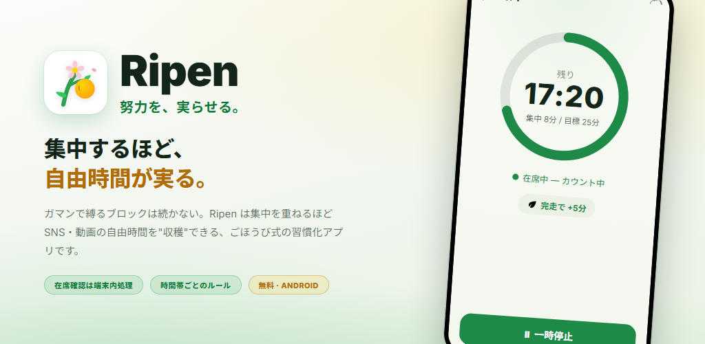
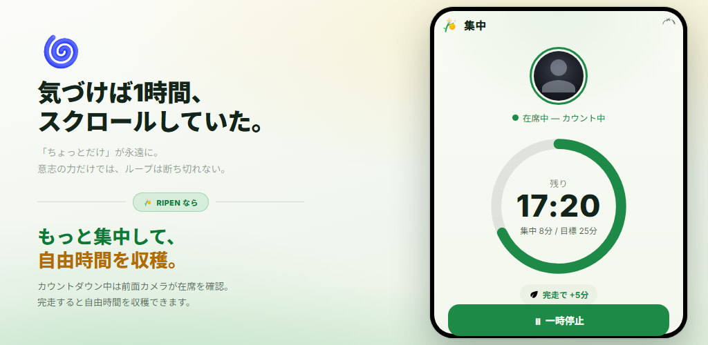
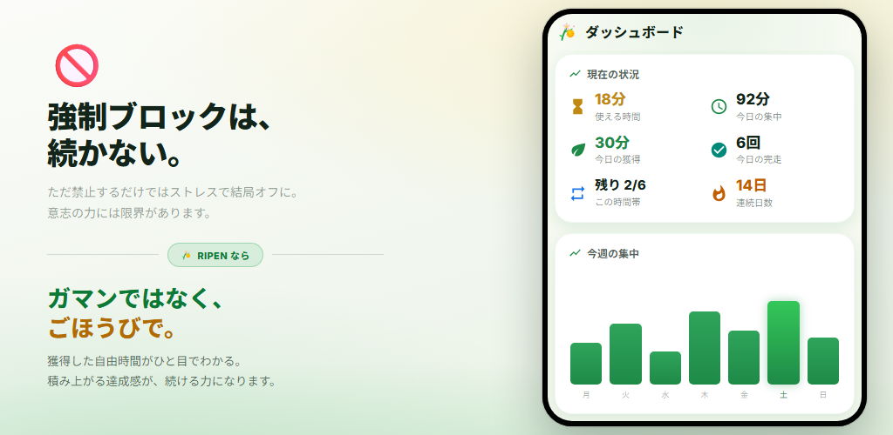
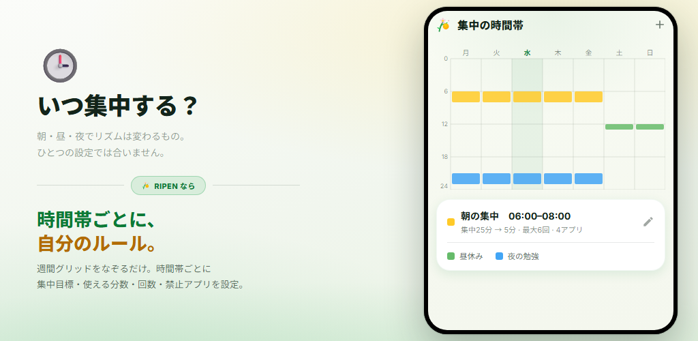
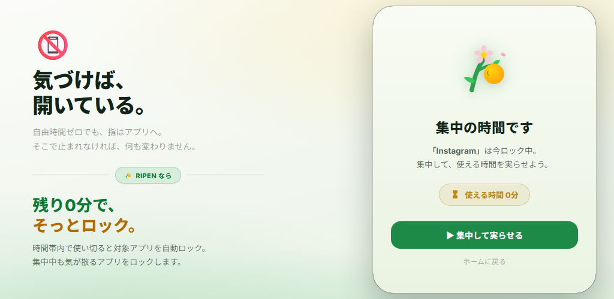
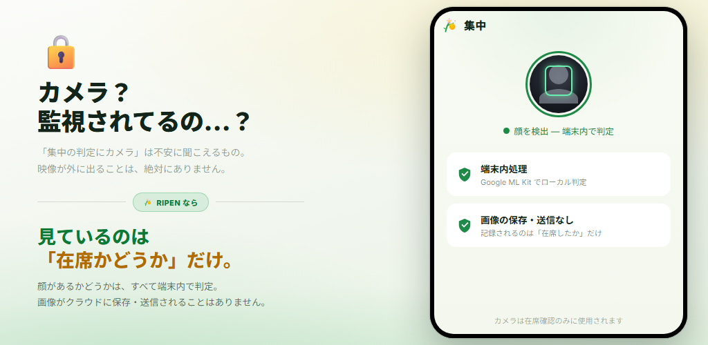

ごほうびループ
集中タイマーを完走するたびに、SNS・動画に使える時間を獲得。ガマンではなく報酬で行動が変わります。
ガマンで縛るアプリブロックは続かない。Ripen は、集中や勉強を積み重ねるほど SNS・動画に使える時間を“収穫”できる、ごほうび式の習慣化アプリ。カメラの在席判定は端末内で行い、時間帯ごとにオフにもできます。
Android 8.0以上 · 無料 · 広告なし · アカウント登録不要

複雑な設定は不要。決めるのは「いつ・どれだけ集中したら・どれだけ使えるか」だけ。
週間グリッドをなぞって、集中したい曜日と時間帯を設定
在席確認がオンなら、前面カメラが在席を確かめながらカウントダウン
完走するたびに、決めた分だけ使える時間を獲得（単語クイズでも可）
使える時間が0分になると、選んだアプリをそっとブロック
在席確認がオンの時間帯では、集中タイマーは顔が画面の前にある間だけ進みます。目標まで完走すると、決めた分だけSNSや動画に使える時間を獲得。途中でやめた回は獲得なしです。

「使える時間」「今日の集中」「今日の獲得」「連続日数」を一目で確認。週・月の推移グラフや時間帯別のヒートマップで、集中しやすい時間帯も見えてきます。

週間グリッドをなぞるだけで、集中したい曜日と時間帯を設定。時間帯ごとに集中目標・使える分・回数・禁止アプリ・カメラの在席確認を変えられます。時間帯の外は自由です。

その時間帯で使える時間を使い切ると、選んだアプリを開いたときにブロック画面を表示。集中セッション中も、気が散るアプリをロックします。設定を緩めるのを防ぐ「設定ロック」も。

タイマーだけだと、席を離れてもカウントは進みます。Ripenは前面カメラで「顔が画面の前にあるか」だけを端末内で判定し、画像は保存も送信もしません。カメラを使わない時間帯も選べます。

集中して時間を収穫し、使い切るとアプリがロックされるまでの流れを動画で紹介します。
「やめたいのに、やめられない」を、報酬で変える。
集中タイマーを完走するたびに、SNS・動画に使える時間を獲得。ガマンではなく報酬で行動が変わります。
前面カメラで「画面の前にいるか」だけを判定。端末内で処理し、画像の保存・送信はしません。時間帯ごとにオフにもできます。
曜日と時刻で複数の時間帯を設定。時間帯ごとに集中目標・使える分・回数・禁止アプリを変えられます。
英単語の4択に決めた数だけ正解しても1回分を獲得。約1万語をCEFRレベル別に収録し、レベル診断・復習リスト・自作デッキにも対応。
時間帯に入った瞬間から先に使える枠。集中ゼロでも少し使え、集中の報酬に上乗せされます。
設定をいじって余暇を盛るのを防ぐコミットメント機能。緩める変更は、解除を予約してから1〜30日待ってからです。
集中の推移・集中カレンダー・完走率・最も集中できる時間帯・禁止アプリ利用の推移まで可視化。
アプリを開かなくても、常駐通知に使える時間・次の集中時間帯・集中の残り時間を表示。完走は音とバイブでお知らせ。
テーマはシステム・ライト・ダークから選択。アプリは日本語・英語など12言語で表示できます。
「集中判定にカメラ」と聞くと不安になるもの。Ripenはプライバシーを最優先に設計しています。
顔の在席判定は Google ML Kit を使って端末内で完結。映像が外部のサーバーに送られることはありません。
判定するのは「顔があるか」だけ。写真や映像を保存することも、送ることもありません。記録するのは在席して集中した秒数だけです。
集中記録や設定は端末内に保存し、Ripenのサーバーには送りません。Androidのバックアップが有効なら、設定はGoogleアカウントのバックアップに含まれ、再インストール時に復元されます。
登録・ログインは不要で、広告や解析ツールも入っていません。ダウンロードしてすぐに使い始められます。
Google Play からダウンロードできます